On keeping
afterform A STUDIO GUIDE / NO. 01 On keeping. GOOD CLOTHES. ANOTHER CHAPTER. A self-directed service concept
Twelve pages about repair choices, clear decisions and useful records.
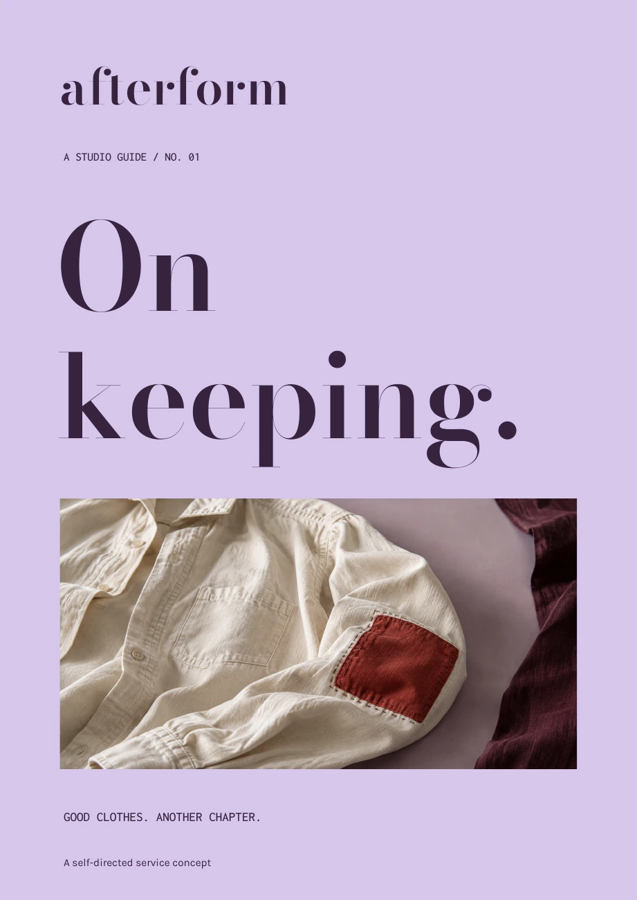
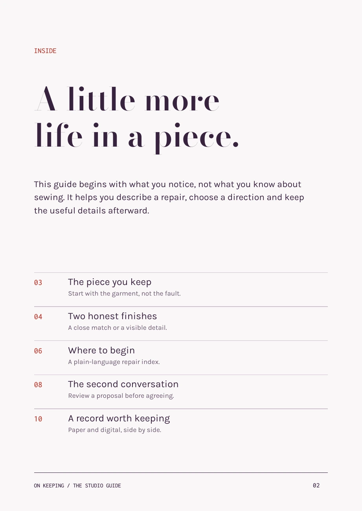
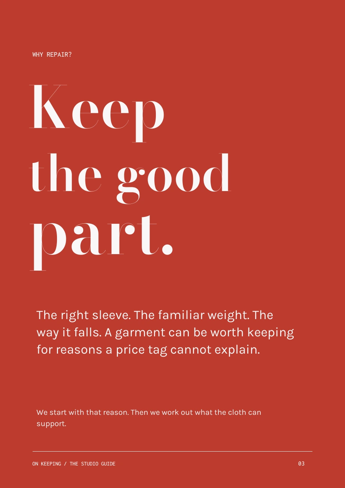
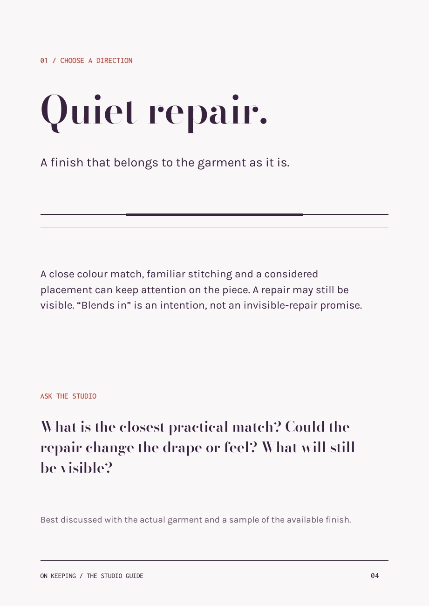
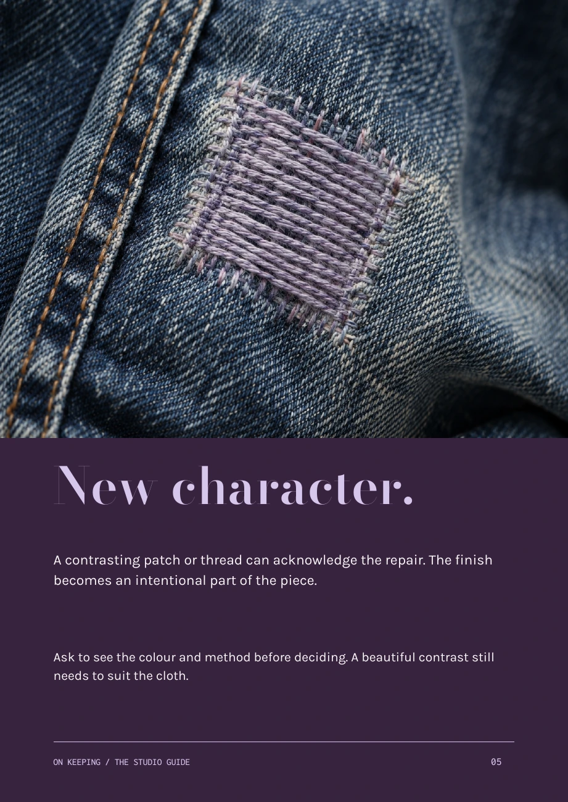
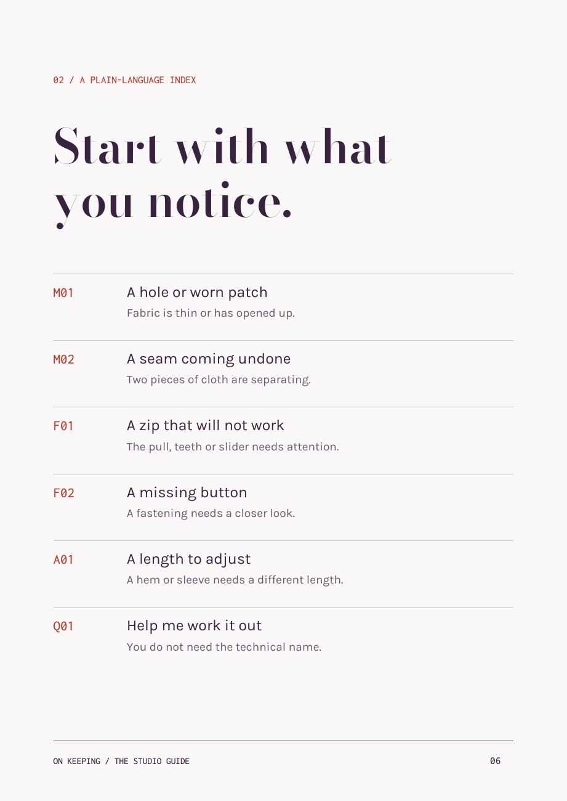
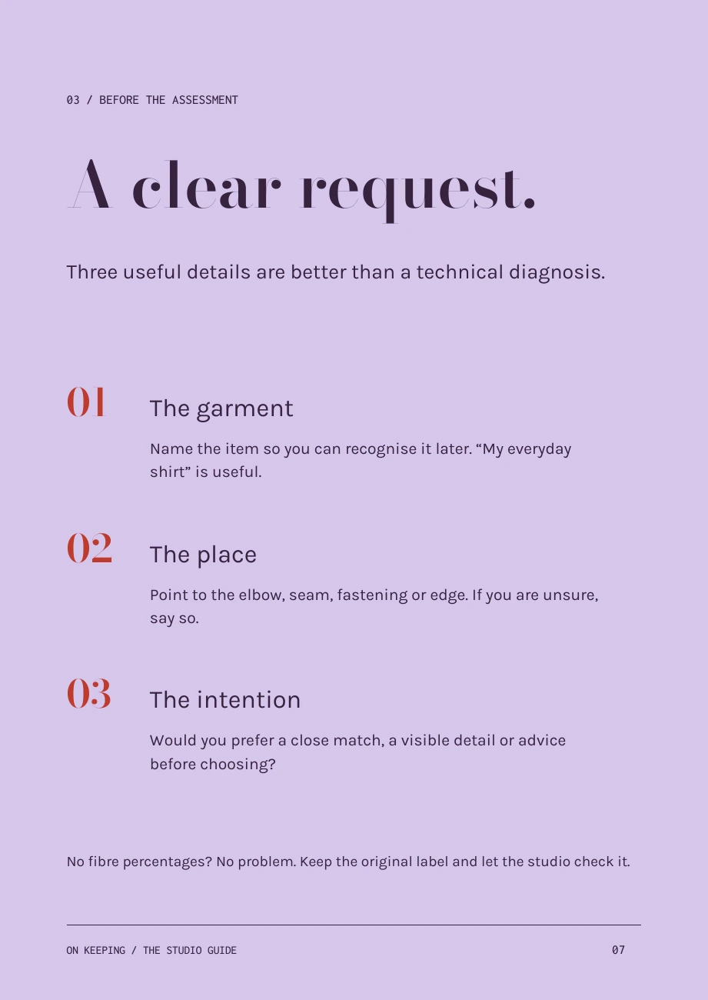
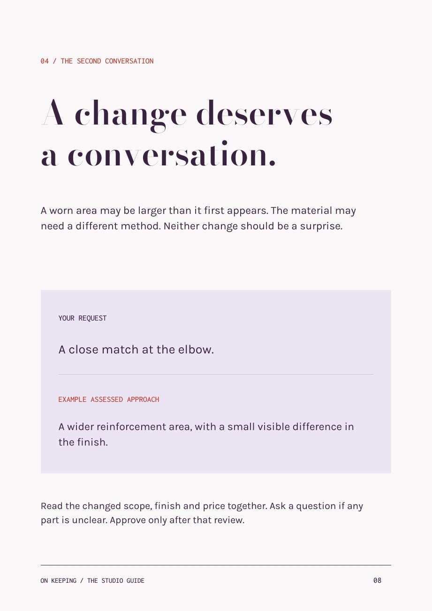
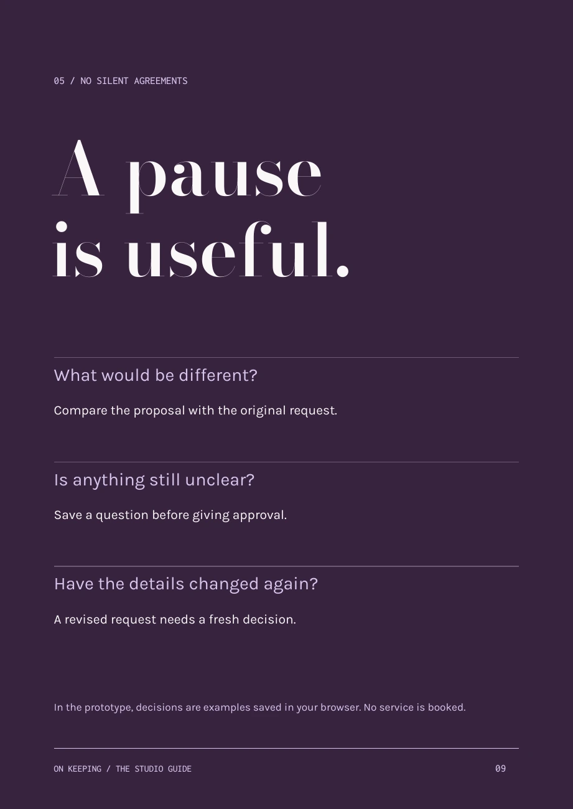
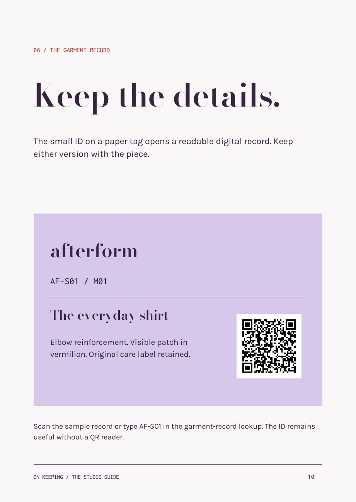
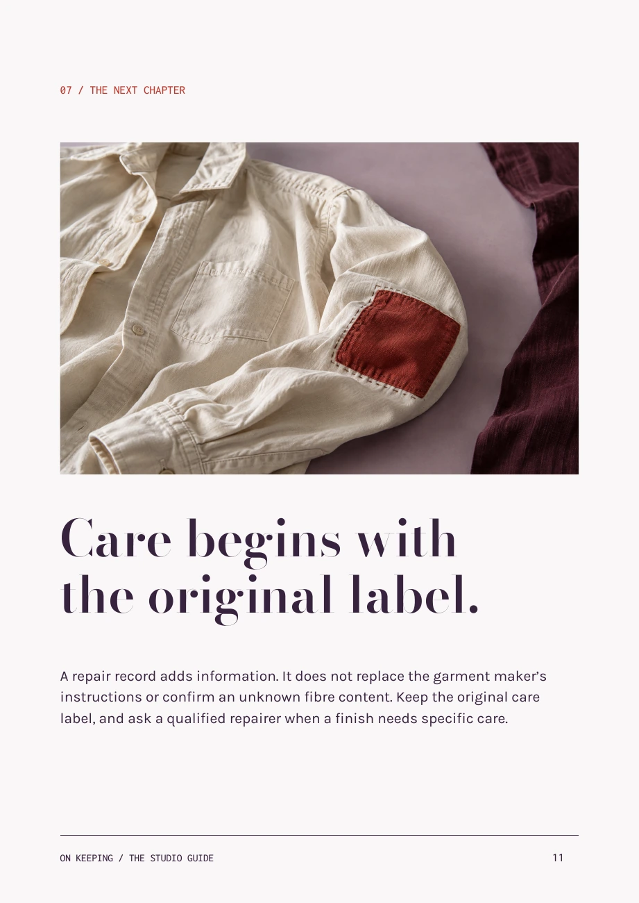
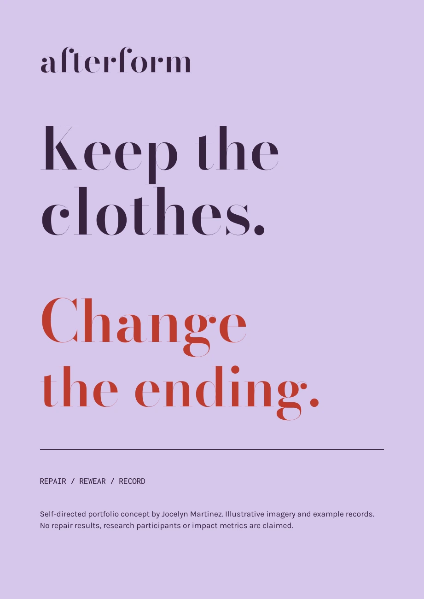
afterform A STUDIO GUIDE / NO. 01 On keeping. GOOD CLOTHES. ANOTHER CHAPTER. A self-directed service concept
INSIDE A little more life in a piece. This guide begins with what you notice, not what you know about sewing. It helps you describe a repair, choose a direction and keep the useful details afterward. 03 The piece you keep Start with the garment, not the fault. 04 Two honest finishes A close match or a visible detail. 06 Where to begin A plain-language repair index. 08 The second conversation Review a proposal before agreeing. 10 A record worth keeping Paper and digital, side by side. ON KEEPING / THE STUDIO GUIDE 02
WHY REPAIR? Keep the good part. The right sleeve. The familiar weight. The way it falls. A garment can be worth keeping for reasons a price tag cannot explain. We start with that reason. Then we work out what the cloth can support. ON KEEPING / THE STUDIO GUIDE 03
01 / CHOOSE A DIRECTION Quiet repair. A finish that belongs to the garment as it is. A close colour match, familiar stitching and a considered placement can keep attention on the piece. A repair may still be visible. “Blends in” is an intention, not an invisible-repair promise. ASK THE STUDIO What is the closest practical match? Could the repair change the drape or feel? What will still be visible? Best discussed with the actual garment and a sample of the available finish. ON KEEPING / THE STUDIO GUIDE 04
New character. A contrasting patch or thread can acknowledge the repair. The finish becomes an intentional part of the piece. Ask to see the colour and method before deciding. A beautiful contrast still needs to suit the cloth. ON KEEPING / THE STUDIO GUIDE 05
02 / A PLAIN-LANGUAGE INDEX Start with what you notice. M01 A hole or worn patch Fabric is thin or has opened up. M02 A seam coming undone Two pieces of cloth are separating. F01 A zip that will not work The pull, teeth or slider needs attention. F02 A missing button A fastening needs a closer look. A01 A length to adjust A hem or sleeve needs a different length. Q01 Help me work it out You do not need the technical name. ON KEEPING / THE STUDIO GUIDE 06
03 / BEFORE THE ASSESSMENT A clear request. Three useful details are better than a technical diagnosis. 01 The garment Name the item so you can recognise it later. “My everyday shirt” is useful. 02 The place Point to the elbow, seam, fastening or edge. If you are unsure, say so. 03 The intention Would you prefer a close match, a visible detail or advice before choosing? No fibre percentages? No problem. Keep the original label and let the studio check it. ON KEEPING / THE STUDIO GUIDE 07
04 / THE SECOND CONVERSATION A change deserves a conversation. A worn area may be larger than it first appears. The material may need a different method. Neither change should be a surprise. YOUR REQUEST A close match at the elbow. EXAMPLE ASSESSED APPROACH A wider reinforcement area, with a small visible difference in the finish. Read the changed scope, finish and price together. Ask a question if any part is unclear. Approve only after that review. ON KEEPING / THE STUDIO GUIDE 08
05 / NO SILENT AGREEMENTS A pause is useful. What would be different? Compare the proposal with the original request. Is anything still unclear? Save a question before giving approval. Have the details changed again? A revised request needs a fresh decision. In the prototype, decisions are examples saved in your browser. No service is booked. ON KEEPING / THE STUDIO GUIDE 09
06 / THE GARMENT RECORD Keep the details. The small ID on a paper tag opens a readable digital record. Keep either version with the piece. afterform AF-S01 / M01 The everyday shirt Elbow reinforcement. Visible patch in vermilion. Original care label retained. Scan the sample record or type AF-S01 in the garment-record lookup. The ID remains useful without a QR reader. ON KEEPING / THE STUDIO GUIDE 10
07 / THE NEXT CHAPTER Care begins with the original label. A repair record adds information. It does not replace the garment maker’s instructions or confirm an unknown fibre content. Keep the original care label, and ask a qualified repairer when a finish needs specific care. ON KEEPING / THE STUDIO GUIDE 11
afterform Keep the clothes. Change the ending. REPAIR / REWEAR / RECORD Self-directed portfolio concept by Jocelyn Martinez. Illustrative imagery and example records. No repair results, research participants or impact metrics are claimed.